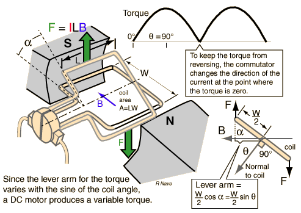

Torque Variation in DC Motor

Operation of commutator to maintain torque direction
Operating Principles of DC Motor
Index
Magnetic field concepts
Magnetic force applications
HyperPhysics
*****
Electricity and Magnetism
Go Back